Fit Continuous-Time State-Space Models to filter Argos satellite geolocation data
Source:R/fit_ssm.R
fit_ssm.Rdfits: i) a simple random walk (rw) ii) a correlated random walk
(crw - a random walk on velocity), or iii) a time-varying move persistence
model (mp), all in continuous-time, to filter Argos LS, and/or KF/KS
location data, GPS data, and/or generic locations with associated standard
errors (e.g., processed light-level geolocation data, or high-resolution
acoustic telemetry data). Location data of different types can combined in a
single data frame (see details). Predicts locations at user-specified time
intervals (regular or irregular).
fit_ssm(
x,
vmax = 5,
ang = c(15, 25),
distlim = c(2500, 5000),
spdf = TRUE,
min.dt = NA,
pf = FALSE,
model = "crw",
time.step = NA,
emf = NULL,
map = NULL,
parameters = NULL,
fit.to.subset = TRUE,
control = ssm_control(),
inner.control = NULL,
...
)Arguments
- x
a
data.frame,tibbleorsf-tibbleof observations, depending on the tracking data type. See more in the Details section, below, and the Overview vignettevignette("Overview", package = "aniMotum").- vmax
max travel rate (m/s) to identify implausible locations
- ang
angles (deg) of implausible location "spikes"
- distlim
lengths (m) of implausible location "spikes"
- spdf
(logical) turn pre-filtering on (default; TRUE) or off
- min.dt
minimum allowable time difference between observations;
dt <= min.dtwill be ignored by the SSM. Default is 0: all time differences > 0 are allowed.- pf
just pre-filter the data, do not fit the SSM (default is FALSE)
- model
fit a simple random walk (
rw), correlated random walk (crw), or a time-varying move persistence model (mp), all as continuous-time process models- time.step
options: 1) the regular time interval, in hours, to predict to; 2) a vector of prediction times, possibly not regular, must be specified as a data.frame with id and POSIXt dates; 3) NA - turns off prediction and locations are only estimated at observation times.
- emf
optionally supplied data.frame of error multiplication factors for Argos location quality classes. Default behaviour is to use the factors supplied by emf
- map
a named list of parameters as factors that are to be fixed during estimation, e.g.,
list(psi = factor(NA))- parameters
a list of initial values for all model parameters and unobserved states, default is to let sfilter specify these. Only play with this if you know what you are doing
- fit.to.subset
fit the SSM to the data subset determined by prefilter (default is TRUE)
- control
list of control settings for the outer optimizer (see ssm_control for details)
- inner.control
list of control settings for the inner optimizer (see TMB::MakeADFun for additional details)
- ...
variable name arguments passed to format_data, see format_data for details
Value
a list with components
callthe matched callpredictedan sf tbl of predicted location statesfittedan sf tbl of fitted locationsparmodel parameter summarydataan augmented sf tbl of the formatted input datainitsa list of initial valuespmthe process model fit, either "rw" or "crw"tstime time.step in h usedoptthe object returned by the optimizertmbthe TMB objectrepTMB sdreportaicthe calculated Akaike Information Criteriontimethe processing time for sfilter
Details
x is a data.frame, tibble, or sf-tibble with 5, 7 or 8
columns (the default format), depending on the tracking data type. Argos
Least-Squares and GPS data should have 5 columns in the following order:
id, date, lc, lon, lat. Where date can be a POSIX object or text
string in YYYY-MM-DD HH:MM:SS format. If a text string is supplied then the
time zone is assumed to be UTC. lc (location class) can include the
following values: 3, 2, 1, 0, A, B, Z, G, or GL. The latter two are for GPS
locations and 'Generic Locations', respectively. Class Z values are assumed
to have the same error variances as class B. By default, class G (GPS)
locations are assumed to have error variances 10x smaller than Argos class 3
variances, but unlike Argos error variances the GPS variances are the same for
longitude and latitude.
The format_data function can be used as a data pre-processing
step or called automatically within fit_ssm to restructure data that is
not in one of the above default formats. The minimum essential variables:
id, date, lc, lon, lat must exist in the input data but they can
have different names and exist in a different column order. See
format_data for details.
See emf for details on how to modify these assumptions.
Argos Kalman Filter (or Kalman Smoother) data should have 8 columns,
including the above 5 plus smaj, smin, eor that contain Argos error
ellipse variables (in m for smaj, smin and deg for eor).
Generic locations can be modelled provided each longitude and latitude
(or X and Y) coordinate has a corresponding standard error. These data should
have 7 columns, including the above 5 plus two extra columns, typically
named x.sd, y.sd that provide the standard errors for the longitude,
latitude (or X, Y) coordinates. Longitude and latitude standard errors should
be in degrees, whereas X and Y standard errors should be in m. In either case,
all lc values should be set to GL (Generic Location), the helper function
format_data will add the lc variable to the input data automatically.
Multiple location data types can be combined in a single data frame (see the Overview vignette for examples).
When data are provided as an sf-tibble, the user-specified projection is
respected, although projected units are always transformed to km to improve
SSM convergence efficiency. Otherwise, longlat data are re-projected
internally to a global Mercator grid and provided as the default output.
A simple tibble, without a geom, of lon,lat and x,y location estimates
can be obtained by using grab with the argument as_sf = FALSE.
References
Jonsen ID, Patterson TA, Costa DP, et al. (2020) A continuous-time state-space model for rapid quality-control of Argos locations from animal-borne tags. Movement Ecology 8:31
Jonsen ID, McMahon CR, Patterson TA, et al. (2019) Movement responses to environment: fast inference of variation among southern elephant seals with a mixed effects model. Ecology. 100(1):e02566
Examples
## fit crw model to Argos LS data
fit <- fit_ssm(ellie, vmax = 4, model = "crw", time.step = 24,
control = ssm_control(verbose = 0))
#>
## time series plots of fitted values and observations
plot(fit, what = "fitted", type = 1, ask = FALSE)
#> $`54591`

#>
## 2-D tracks plots of predicted values and observations
plot(fit, what = "predicted", type = 2, ask = FALSE)
#> $`54591`
 #>
#>